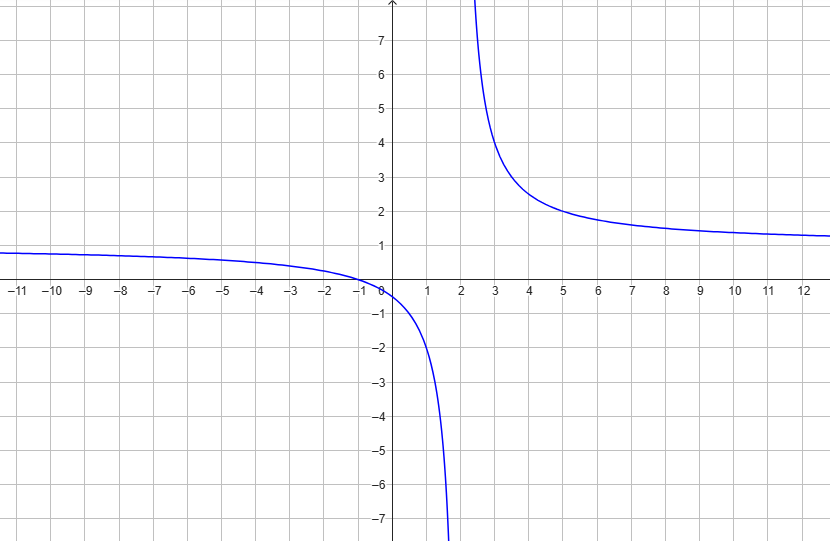

Una funzione è una legge che mette in relazione due quantità in modo da associare ad
ogni input uno e un solo output.
Esempio 1
Un negozio vende sapone liquido sfuso a \(6\) € al litro più il costo del recipiente, pari
a
\(1\) €.
Indichiamo con
\(\color{blue}{x}\) il quantitativo di sapone acquistato (espresso in litri)
\(\color{red}{y}\) il prezzo che il cliente deve pagare.
La relazione che lega \(\color{blue}{x}\) ed \(\color{red}{y}\) è la seguente:
\[
\color{red}{y} \color{black}{} = 6 \cdot \color{blue}{x} \color{black}{}+ 1
\]
Saputo \(\color{blue}{x}\), il quantitativo di sapone acquistato, la formula ci permette di determinare
l'importo \(\color{red}{y}\) dovuto
dal cliente. In altre parole abbiamo espresso la quantità \(\color{red}{y}\,\,\) in funzione
della
quantità \(\color{blue}{x}\).
Ad esempio, se \(\color{blue}{x} \color{black}{} = \color{blue}{2}\), allora
\[
\begin{align*}
\color{red}{y} \color{black}{} &= 6 \cdot \color{blue}{2} \color{black}{} + 1 = \\
&= 12 + 1 = \\
&= \color{red}{13}
\end{align*}
\]
ovvero per \(\color{blue}{2}\) litri di sapone il cliente paga \(\color{red}{13}\) €
Esempio 2
Un gruppo di amici decide di acquistare un tavolo da ping pong del costo di \(300\) €.
Indichiamo con
\(n\) il numero di partecipanti all'acquisto,
\(Q\) la quota con la quale ciascuno contribuisce all'acquisto
del tavolo.
Queste due quantità sono legate dalla legge
\[
Q = \dfrac{300}{n}
\]
Diremo che \(Q\) è espressa in funzione di \(n\) attraverso la legge sopra scritta.
Legge analitica di una funzione
Possiamo pensare una funzione come la lista di infinite associazioni tra
input ed output.
Vediamo l'esempio mostrato nel seguente video.
Ad ogni input \(x\) che viene inserito, la funzione restituisce l'output corrispondente.
Possiamo chiederci: esiste una serie di operazioni che ci permettono di ottenere l'output
a partire dall'input?
Guardiamo la tabella input/output della funzione mostrata nel video.
input x
output y
\(1\)
\(5\)
\(2\)
\(7\)
\(3\)
\(9\)
\(4\)
\(11\)
\(1.2\)
\(3.4\)
\(10\)
\(23\)
\(-2\)
\(-1\)
\(\dfrac{2}{3}\)
\(2.\bar{3}\)
\(-0.2\)
\(2.6\)
\(\cdots\)
\(\cdots\)
A pensarci bene, ogni output si ottiene raddoppiando l'input ed aggiungendo \(3\) al risultato.
Diremo che la legge analitica che definisce la funzione è
\[
f(x) = 2x + 3
\]
dove \(f(x)\) si legge "f di \(x\)".
Possiamo dire che
La legge analitica di una funzione è l'insieme di operazioni che permettono di
calcolare l'output di una funzione a partire dall'input.
Osserviamo che non sempre una funzione ammette legge analitica.
Consideriamo ad esempio la funzione \(f\) che associa a ciascun giorno di scuola il numero di
presenti in una classe.
input x
output y
\(1\)
\(4\)
\(2\)
\(5\)
\(3\)
\(9\)
\(4\)
\(18\)
\(5\)
\(1\)
\(6\)
\(17\)
\(7\)
\(5\)
\(8\)
\(23\)
\(9\)
\(21\)
\(10\)
\(1\)
\(11\)
\(24\)
\(12\)
\(3\)
\(13\)
\(0\)
\(14\)
\(1\)
\(15\)
\(5\)
\(16\)
\(7\)
\(17\)
\(11\)
\(18\)
\(26\)
\(19\)
\(5\)
\(20\)
\(12\)
\(21\)
\(15\)
\(22\)
\(2\)
\(23\)
\(23\)
\(24\)
\(6\)
\(25\)
\(22\)
\(26\)
\(14\)
\(27\)
\(15\)
\(28\)
\(4\)
\(29\)
\(9\)
\(30\)
\(25\)
\(31\)
\(19\)
\(32\)
\(2\)
\(33\)
\(20\)
\(34\)
\(20\)
\(35\)
\(16\)
\(36\)
\(14\)
\(37\)
\(11\)
\(38\)
\(21\)
\(39\)
\(15\)
\(40\)
\(16\)
\(41\)
\(21\)
\(42\)
\(21\)
\(43\)
\(18\)
\(44\)
\(16\)
\(45\)
\(18\)
\(46\)
\(20\)
\(47\)
\(22\)
\(48\)
\(5\)
\(49\)
\(10\)
\(50\)
\(1\)
\(51\)
\(18\)
\(52\)
\(8\)
\(53\)
\(21\)
\(54\)
\(12\)
\(55\)
\(2\)
\(56\)
\(22\)
\(57\)
\(8\)
\(58\)
\(4\)
\(59\)
\(24\)
\(60\)
\(7\)
\(61\)
\(4\)
\(62\)
\(24\)
\(63\)
\(23\)
\(64\)
\(20\)
\(65\)
\(9\)
\(66\)
\(22\)
\(67\)
\(16\)
\(68\)
\(18\)
\(69\)
\(15\)
\(70\)
\(2\)
\(71\)
\(13\)
\(72\)
\(19\)
\(73\)
\(1\)
\(74\)
\(20\)
\(75\)
\(20\)
\(76\)
\(2\)
\(77\)
\(11\)
\(78\)
\(8\)
\(79\)
\(26\)
\(80\)
\(4\)
\(81\)
\(8\)
\(82\)
\(11\)
\(83\)
\(17\)
\(84\)
\(21\)
\(85\)
\(25\)
\(86\)
\(9\)
\(87\)
\(12\)
\(88\)
\(5\)
\(89\)
\(24\)
\(90\)
\(25\)
\(91\)
\(7\)
\(92\)
\(17\)
\(93\)
\(23\)
\(94\)
\(0\)
\(95\)
\(4\)
\(96\)
\(15\)
\(97\)
\(1\)
\(98\)
\(25\)
\(99\)
\(6\)
\(100\)
\(5\)
\(101\)
\(18\)
\(102\)
\(8\)
\(103\)
\(4\)
\(104\)
\(18\)
\(105\)
\(20\)
\(106\)
\(16\)
\(107\)
\(11\)
\(108\)
\(18\)
\(109\)
\(16\)
\(110\)
\(5\)
\(111\)
\(15\)
\(112\)
\(9\)
\(113\)
\(11\)
\(114\)
\(3\)
\(115\)
\(10\)
\(116\)
\(13\)
\(117\)
\(7\)
\(118\)
\(5\)
\(119\)
\(20\)
\(120\)
\(0\)
\(121\)
\(17\)
\(122\)
\(25\)
\(123\)
\(26\)
\(124\)
\(9\)
\(125\)
\(7\)
\(126\)
\(21\)
\(127\)
\(14\)
\(128\)
\(3\)
\(129\)
\(9\)
\(130\)
\(11\)
\(131\)
\(3\)
\(132\)
\(3\)
\(133\)
\(10\)
\(134\)
\(4\)
\(135\)
\(10\)
\(136\)
\(2\)
\(137\)
\(11\)
\(138\)
\(23\)
\(139\)
\(26\)
\(140\)
\(21\)
\(141\)
\(8\)
\(142\)
\(0\)
\(143\)
\(7\)
\(144\)
\(20\)
\(145\)
\(13\)
\(146\)
\(24\)
\(147\)
\(17\)
\(148\)
\(12\)
\(149\)
\(24\)
\(150\)
\(4\)
\(151\)
\(24\)
\(152\)
\(6\)
\(153\)
\(24\)
\(154\)
\(4\)
\(155\)
\(6\)
\(156\)
\(24\)
\(157\)
\(8\)
\(158\)
\(13\)
\(159\)
\(23\)
\(160\)
\(22\)
\(161\)
\(2\)
\(162\)
\(14\)
\(163\)
\(25\)
\(164\)
\(1\)
\(165\)
\(17\)
\(166\)
\(23\)
\(167\)
\(20\)
\(168\)
\(1\)
\(169\)
\(21\)
\(170\)
\(13\)
\(171\)
\(16\)
\(172\)
\(0\)
\(173\)
\(25\)
\(174\)
\(10\)
\(175\)
\(11\)
\(176\)
\(22\)
\(177\)
\(10\)
\(178\)
\(26\)
\(179\)
\(14\)
\(180\)
\(6\)
\(181\)
\(17\)
\(182\)
\(25\)
\(183\)
\(5\)
\(184\)
\(17\)
\(185\)
\(5\)
\(186\)
\(13\)
\(187\)
\(14\)
\(188\)
\(12\)
\(189\)
\(18\)
\(190\)
\(11\)
\(191\)
\(22\)
\(192\)
\(24\)
\(193\)
\(7\)
\(194\)
\(25\)
\(195\)
\(16\)
\(196\)
\(15\)
\(197\)
\(15\)
\(198\)
\(24\)
\(199\)
\(13\)
\(200\)
\(13\)
Questa è senz'altro una funzione. É difficile immaginare che esista un legame determinato
tra il giorno \(x\) ed il numero di presenti in quel giorno, \(f(x)\). In questo caso la funzione \(f\)
non ammette
legge analitica.
Grafico di una funzione
Il grafico di una funzione \(f\) è l'insieme di tutti i punti della forma
\(\left(x\,;\,\,f(x)\right)\).
In altre parole, se prendiamo un punto qualsiasi del grafico, la sua coordinata \(x\) è uno degli input della
funzione,
mentre la coordinata \(y\) indica l'output corrispondente.
Trascinate il punto blu per vedere
quali sono le coppie di input/output associati da questa funzione.
Esercizio
Consideriamo la funzione
\[
f(x) = \dfrac{2x - 1}{4x + 5}
\]
Calcolare \(f(5)\).
Soluzione: \(\,\, f(5) = \dfrac{9}{25}\)
Qual è la variazione della funzione da \(x = -1\) a \(x = 1\)
Soluzione: \(\,\, \dfrac{28}{9}\)
Per quale valori della \(x\) la funzione assume valore \(-2\)
Soluzione: \(\,\, x = -\dfrac{9}{10}\)
Per quali valori della \(x\) la funzione assume valori positivi?
Soluzione:\(\,\, x \lt -\dfrac{5}{4}\,\,\) oppure \(\,\, x \gt \dfrac{1}{2}\)
Consideriamo la funzione \(g(x) = 2x - 1\). Per quali valori di \(x\) la funzione \(f\) e la
funzione \(g\)
assumono lo stesso valore?
Soluzione: Le funzioni assumono lo stesso valore per \(\,\,x = -1\,\,\) oppure \(\,\,x =
\dfrac{1}{2}\)
Esercizio
Consideriamo la funzione \(f\) avente il seguente grafico.

Quanto vale \(f(-1)\)?
Soluzione: \(f(-1) = 0\)
Qual è la variazione della funzione da \(x = 3\) a \(x = 5\)
Soluzione: la variazione è di \(-2\).
Per quale valore della \(x\) la funzione assume valore \(-2\)?
Soluzione: \(\,\, x = 1\)
É vero che \(f(x) > 1\,\,\) per ogni \(x\) maggiore di \(2\)?
Soluzione: sì, perché in corrispondenza di tali valori della \(x\) il grafico della
funzione \(f\)
sta sopra la retta \(y = 1\)
É vero che la funzione assume valori negativi per ogni \(x\) minore di \(-1\)?
Soluzione: no, è vero l'opposto. Per \(x \lt -1\) il grafico della funzione si trova
sotto l'asse delle \(x\).